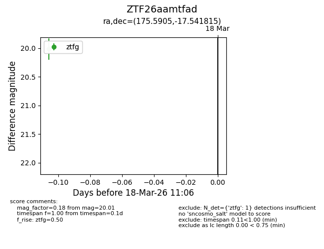
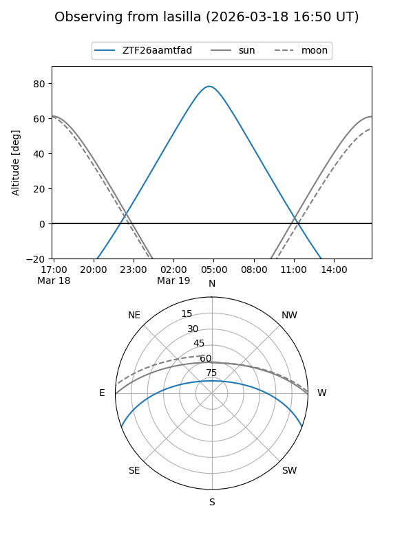
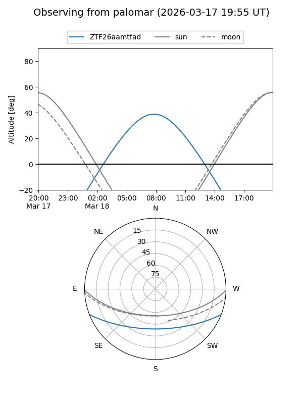
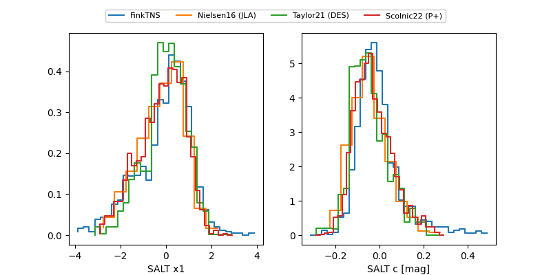

ZTF26aamtfad
Target ZTF26aamtfad at 2026-03-18 11:08
Aliases and brokers:
FINK: link
Lasair: link
ALeRCE: link
alt names
ZTF26aamtfad (ztf,fink_ztf)
Coordinates:
equatorial (ra, dec) = 175.5905,-17.54181
equatorial (HMS+DMS) = 11:42:21.73,-17:32:30.53
galactic (l, b) = (280.4341,+42.29233)
Flags:
Photometry:
last ztfg=20.01
1 ztfg detections
Lightcurve

Visibility


Additional plots
